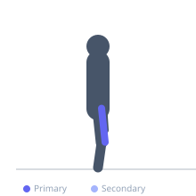
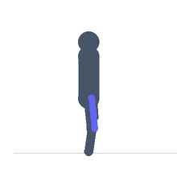

Exercise guide / Leg Extension
Leg Extension
The leg extension is a machine-based isolation exercise for the quadriceps, performed by extending the knee against a padded resistance arm. It is the only exercise that directly isolates all four heads of the quadriceps simultaneously and is commonly used as a finishing movement or for rehabilitation of the quadriceps.
Primary muscles
rectus femoris
vastus lateralis
vastus medialis
vastus intermedius
Secondary muscles
Equipment
Leg Extension Machine


Starting position
- Sit on the leg extension machine with the back against the pad and the ankle pad resting against the front of the lower legs just above the ankle. Knees are bent at approximately 90 degrees.
Setup
- Adjust the seat so the back of the knee aligns with the pivot point. Adjust the ankle pad to a comfortable position on the lower leg.
Steps
- Extend the knees to lift the pad, straightening the legs.
- Raise until the legs are nearly fully extended.
- Squeeze the quadriceps at the top, then lower under control.
Coaching cues
- Squeeze your quads hard and hold for one second at full extension
- Control the descent — the eccentric is where muscle damage occurs
Breathing
- Exhale on extension, inhale on return.
Range of motion
- Full extension at the top without joint hyperextension. Full return to 90 degrees at the bottom.
Tempo
- 2-1-3-0
Common mistakes
- Jerking the weight up with momentum instead of controlled quad contraction
- Not fully extending at the top
Safety
- Some individuals with patellar tendon or anterior knee issues may find this movement uncomfortable — reduce range or avoid it
- Do not hyper-extend the knees at the top
Training
- hypertrophy: 10–15 reps
- endurance: 15–25 reps
- hypertrophy: 3–4 sets
- endurance: 2–3 sets
- Rest: {'hypertrophy': 75, 'endurance': 45}